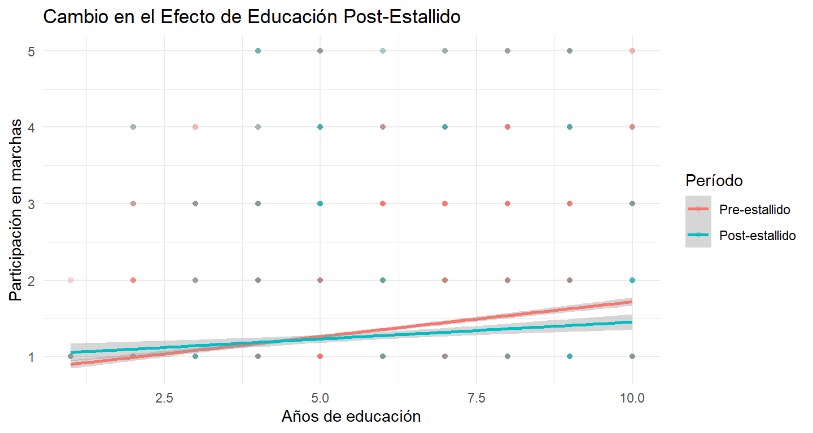
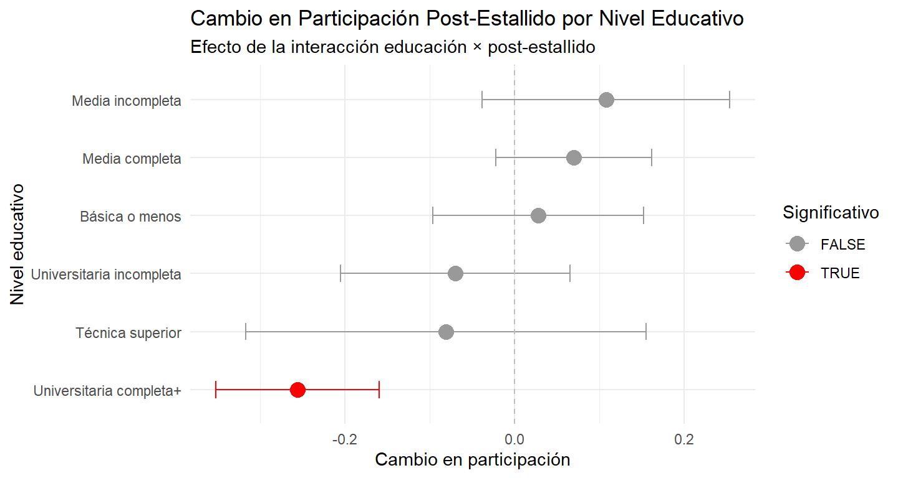

# Función para mostrar resultados formateosmostrar_resultados_aleatorios <-function(modelos) {for(i inseq_along(modelos)) {cat("\n" , "=== MODELO:", names(modelos)[i], "===\n")print(summary(modelos[[i]]))cat("\n", rep("-", 50), "\n") }}# Si quieres ver todos los resultados (descomenta la siguiente línea)mostrar_resultados_aleatorios(modelos_aleatorios)
=== MODELO: Lineal básico ===
Linear mixed model fit by maximum likelihood ['lmerMod']
Formula: marcha ~ educ_encuestado + edad + genero + post_estallido + (1 |
idencuesta)
Data: elsoc_panel
AIC BIC logLik -2*log(L) df.resid
42268.5 42324.1 -21127.2 42254.5 20720
Scaled residuals:
Min 1Q Median 3Q Max
-3.6837 -0.3377 -0.1310 0.0068 5.8823
Random effects:
Groups Name Variance Std.Dev.
idencuesta (Intercept) 0.1469 0.3833
Residual 0.3615 0.6012
Number of obs: 20727, groups: idencuesta, 4445
Fixed effects:
Estimate Std. Error t value
(Intercept) 1.4300601 0.0353644 40.438
educ_encuestado 0.0514354 0.0031965 16.091
edad -0.0092039 0.0004975 -18.501
genero2 -0.0341722 0.0149402 -2.287
post_estallido 0.0761921 0.0089675 8.496
Correlation of Fixed Effects:
(Intr) edc_nc edad gener2
educ_encstd -0.716
edad -0.809 0.341
genero2 -0.272 0.062 -0.021
post_estlld 0.057 -0.092 -0.212 -0.016
- - - - - - - - - - - - - - - - - - - - - - - - - - - - - - - - - - - - - - - - - - - - - - - - - -
=== MODELO: Con padres ===
Linear mixed model fit by maximum likelihood ['lmerMod']
Formula: marcha ~ educ_encuestado + educ_padre + educ_madre + edad + genero +
post_estallido + (1 | idencuesta)
Data: data_completa
AIC BIC logLik -2*log(L) df.resid
10224.1 10282.1 -5103.1 10206.1 4608
Scaled residuals:
Min 1Q Median 3Q Max
-2.1371 -0.4177 -0.2304 -0.0160 4.7951
Random effects:
Groups Name Variance Std.Dev.
idencuesta (Intercept) 0.1725 0.4154
Residual 0.3712 0.6092
Number of obs: 4617, groups: idencuesta, 3835
Fixed effects:
Estimate Std. Error t value
(Intercept) 1.1762801 0.0586921 20.042
educ_encuestado 0.0568678 0.0062877 9.044
educ_padre 0.0182504 0.0074803 2.440
educ_madre 0.0060687 0.0081862 0.741
edad -0.0054069 0.0008051 -6.716
genero2 -0.0452402 0.0231379 -1.955
post_estallido -0.0396321 0.0251545 -1.576
Correlation of Fixed Effects:
(Intr) edc_nc edc_pd edc_md edad gener2
educ_encstd -0.490
educ_padre -0.048 -0.227
educ_madre -0.181 -0.225 -0.604
edad -0.802 0.178 0.008 0.163
genero2 -0.262 0.042 -0.004 0.022 -0.009
post_estlld 0.006 -0.046 -0.005 -0.003 -0.068 -0.016
- - - - - - - - - - - - - - - - - - - - - - - - - - - - - - - - - - - - - - - - - - - - - - - - - -
=== MODELO: Categórico ===
Linear mixed model fit by maximum likelihood ['lmerMod']
Formula:
marcha ~ educ_cat + educ_padres_cat + edad + genero + post_estallido +
(1 | idencuesta)
Data: data_completa
AIC BIC logLik -2*log(L) df.resid
10208.0 10304.5 -5089.0 10178.0 4602
Scaled residuals:
Min 1Q Median 3Q Max
-2.1606 -0.3875 -0.2052 -0.0467 4.8129
Random effects:
Groups Name Variance Std.Dev.
idencuesta (Intercept) 0.1690 0.4111
Residual 0.3711 0.6092
Number of obs: 4617, groups: idencuesta, 3835
Fixed effects:
Estimate Std. Error t value
(Intercept) 1.3937123 0.0551673 25.263
educ_catMedia incompleta 0.0516664 0.0418241 1.235
educ_catMedia completa 0.0987120 0.0356476 2.769
educ_catTécnica superior 0.2102917 0.0627700 3.350
educ_catUniversitaria incompleta 0.1288498 0.0429952 2.997
educ_catUniversitaria completa+ 0.3957764 0.0420844 9.404
educ_padres_catMedia completa 0.0451095 0.0299663 1.505
educ_padres_catMedia incompleta 0.0045314 0.0403063 0.112
educ_padres_catTécnica superior 0.0750912 0.1147130 0.655
educ_padres_catUniversitaria+ 0.1312808 0.0366104 3.586
edad -0.0052784 0.0008217 -6.424
genero2 -0.0461723 0.0230731 -2.001
post_estallido -0.0433667 0.0251514 -1.724
Consistencia: Misma magnitud y significancia que en efectos fijos, confirmando la robustez del hallazgo de que solo la educación paterna tiene efecto residual.
Esto sugeriría que: - Antes del estallido: Efecto de educación = 0.066 puntos - Después del estallido: Efecto de educación = 0.066 - 0.051 = 0.015 puntos
Implicación: El efecto de la educación sobre participación en marchas disminuyó significativamente después del estallido social
Ajuste de Modelos Mejor modelo por AIC: Interacción temporal (10,206.2)
Captura heterogeneidad temporal importante Consistente entre efectos fijos y aleatorios
Modelo Categórico (Gradiente Educacional)
Efectos by nivel educativo:
Media incompleta: +0.052 Media completa: +0.099 Técnica superior: +0.210 Universitaria incompleta: +0.129 Universitaria completa+: +0.396 (efecto más fuerte)
Patrón: Relación no completamente lineal - hay un salto importante en educación universitaria completa.
2 Interacción Temporal (MÁXIMA PRIORIDAD)
Mejor ajuste estadístico (AIC más bajo)
Hallazgo sustantivo clave: Cambio en el efecto de educación post-estallido
Implicaciones teóricas importantes sobre democratización de la participación
Code
library(marginaleffects)# 1. Efectos marginales por períodoavg_slopes(modelo5, by ="post_estallido")
ggplot(data_completa, aes(x = educ_encuestado, y = marcha, color =factor(post_estallido))) +geom_point(alpha =0.3) +geom_smooth(method ="lm", se =TRUE) +labs(title ="Cambio en el Efecto de Educación Post-Estallido",x ="Años de educación", y ="Participación en marchas",color ="Período") +scale_color_discrete(labels =c("Pre-estallido", "Post-estallido")) +theme_minimal()

Convergencia de Pendientes
Pre-estallido (rojo): Pendiente más pronunciada - educación tiene mayor efecto Post-estallido (azul): Pendiente más suave - educación tiene menor efecto Las líneas convergen hacia la derecha, confirmando la interacción negativa
Democratización de la Participación
Brecha educacional se reduce: La diferencia entre alta y baja educación es menor post-estallido Participación base aumenta: El intercepto post-estallido parece ligeramente más alto “Techo” similar: Los más educados participan de forma similar en ambos períodos
Magnitud del Cambio
La diferencia entre las pendientes es visualmente clara y estadísticamente significativa (t=-4.48) El cambio es más pronunciado en los niveles bajos de educación (lado izquierdo del gráfico)
Code
# Modelo con interacción completamodelo_cat_temporal <-lmer(marcha ~ educ_cat * post_estallido + educ_padres_cat + edad + genero + (1| idencuesta), data = data_completa, REML =FALSE)summary(modelo_cat_temporal)
Linear mixed model fit by maximum likelihood ['lmerMod']
Formula: marcha ~ educ_cat * post_estallido + educ_padres_cat + edad +
genero + (1 | idencuesta)
Data: data_completa
AIC BIC logLik -2*log(L) df.resid
10188.1 10316.9 -5074.1 10148.1 4597
Scaled residuals:
Min 1Q Median 3Q Max
-2.3437 -0.3585 -0.2001 -0.0427 4.7818
Random effects:
Groups Name Variance Std.Dev.
idencuesta (Intercept) 0.1749 0.4183
Residual 0.3625 0.6021
Number of obs: 4617, groups: idencuesta, 3835
Fixed effects:
Estimate Std. Error t value
(Intercept) 1.3904242 0.0558095 24.914
educ_catMedia incompleta 0.0360476 0.0449349 0.802
educ_catMedia completa 0.0890191 0.0378984 2.349
educ_catTécnica superior 0.2271704 0.0679393 3.344
educ_catUniversitaria incompleta 0.1424852 0.0457103 3.117
educ_catUniversitaria completa+ 0.4476602 0.0442250 10.122
post_estallido 0.0281113 0.0634771 0.443
educ_padres_catMedia completa 0.0420435 0.0299116 1.406
educ_padres_catMedia incompleta 0.0064302 0.0401928 0.160
educ_padres_catTécnica superior 0.0472963 0.1143000 0.414
educ_padres_catUniversitaria+ 0.1338538 0.0365445 3.663
edad -0.0053890 0.0008209 -6.565
genero2 -0.0475880 0.0230487 -2.065
educ_catMedia incompleta:post_estallido 0.0802367 0.0982007 0.817
educ_catMedia completa:post_estallido 0.0417768 0.0790430 0.529
educ_catTécnica superior:post_estallido -0.1090545 0.1363654 -0.800
educ_catUniversitaria incompleta:post_estallido -0.0984380 0.0937846 -1.050
educ_catUniversitaria completa+:post_estallido -0.2837787 0.0803446 -3.532
Code
# Efectos marginales por categoría educativa y períodolibrary(marginaleffects)efectos_cat <-avg_slopes(modelo_cat_temporal, variables ="post_estallido", by ="educ_cat")print(efectos_cat)
# Crear tabla para visualizaciónresultados_viz <-data.frame(educ_cat =c("Básica o menos", "Media incompleta", "Media completa", "Técnica superior", "Universitaria incompleta", "Universitaria completa+"),estimate =c(0.028, 0.108, 0.070, -0.081, -0.070, -0.256),se =c(0.0635, 0.0746, 0.0469, 0.1206, 0.0691, 0.0493),significativo =c(FALSE, FALSE, FALSE, FALSE, FALSE, TRUE))# Gráfico de coeficientesggplot(resultados_viz, aes(x =reorder(educ_cat, estimate), y = estimate,color = significativo)) +geom_point(size =4) +geom_errorbar(aes(ymin = estimate -1.96*se, ymax = estimate +1.96*se),width =0.3) +geom_hline(yintercept =0, linetype ="dashed", color ="gray") +coord_flip() +scale_color_manual(values =c("gray60", "red")) +labs(title ="Cambio en Participación Post-Estallido por Nivel Educativo",subtitle ="Efecto de la interacción educación × post-estallido",x ="Nivel educativo", y ="Cambio en participación",color ="Significativo") +theme_minimal()

Eje X: Cambio en Participación
Valores negativos (izquierda): Reducción en participación post-estallido Valores positivos (derecha): Aumento en participación post-estallido Línea vertical en 0: Sin cambio
Eje Y: Niveles Educativos (ordenados por cambio)
Arriba: Grupos que más aumentaron Abajo: Grupos que más disminuyeron
Colores:
Gris: Cambios no estadísticamente significativos Rojo: Cambios estadísticamente significativos (p<0.05)
Patrón Principal Visualizado: 1. Solo un Grupo Cambia Significativamente
Universitaria completa+: Única categoría en rojo Reducción significativa de ~0.25 puntos Todos los demás: Cambios no significativos (gris)
Gradiente Educacional
Educación baja (arriba): Cambios levemente positivos pero no significativos Educación alta (abajo): Cambios negativos, solo universitarios significativo
Patrón de “Convergencia Selectiva” El gráfico muestra que la democratización proviene exclusivamente de que los universitarios completos redujeron significativamente su participación, mientras todos los demás grupos se mantuvieron relativamente estables. Implicaciones del Gráfico: Refinamiento de la Interpretación
NO hay movilización masiva de los menos educados SÍ hay desmovilización específica de los más educados El cambio es SELECTIVO, no general
Robustez Estadística
Solo una de las seis categorías cambia significativamente Sugiere que el efecto está altamente concentrado en el grupo más educado Todos los otros cambios pueden ser ruido estadístico
Conclusión Principal: La democratización de la participación en marchas post-estallido chileno es un fenómeno de “techo”, no de “piso” - los universitarios se retiraron parcialmente, reduciendo la desigualdad participativa, pero sin que hubiera una movilización significativa de otros grupos sociales.
La democratización fue por “techo” (ceiling effect) en los más educados, no por “piso” (floor effect) en los menos educados. Esto sugiere dinámicas de diferenciación de clase más que inclusión masiva
Tentativo: La democratización política en crisis NO proviene principalmente de movilización masiva de los excluidos, sino de “desmovilización selectiva” de las élites educadas.
Categórico (ALTA PRIORIDAD) Por qué es valioso:
Revela no-linealidades que el modelo lineal oculta Umbral en universitaria completa+ (efecto 4x mayor que media) Gradiente educacional más realista
Análisis adicionales recomendados:
Code
library(emmeans)library(lme4)# 1. Contrastes específicos entre nivelesemmeans::contrast(emmeans(modelo3, "educ_cat"), method ="pairwise")
contrast estimate SE df
Básica o menos - Media incompleta -0.0517 0.0418 Inf
Básica o menos - Media completa -0.0987 0.0356 Inf
Básica o menos - Técnica superior -0.2103 0.0628 Inf
Básica o menos - Universitaria incompleta -0.1288 0.0430 Inf
Básica o menos - (Universitaria completa+) -0.3958 0.0421 Inf
Media incompleta - Media completa -0.0470 0.0380 Inf
Media incompleta - Técnica superior -0.1586 0.0634 Inf
Media incompleta - Universitaria incompleta -0.0772 0.0447 Inf
Media incompleta - (Universitaria completa+) -0.3441 0.0432 Inf
Media completa - Técnica superior -0.1116 0.0573 Inf
Media completa - Universitaria incompleta -0.0301 0.0365 Inf
Media completa - (Universitaria completa+) -0.2971 0.0336 Inf
Técnica superior - Universitaria incompleta 0.0814 0.0611 Inf
Técnica superior - (Universitaria completa+) -0.1855 0.0584 Inf
Universitaria incompleta - (Universitaria completa+) -0.2669 0.0386 Inf
z.ratio p.value
-1.235 0.8195
-2.769 0.0625
-3.350 0.0105
-2.997 0.0326
-9.404 <.0001
-1.238 0.8183
-2.500 0.1238
-1.725 0.5148
-7.966 <.0001
-1.946 0.3742
-0.826 0.9629
-8.843 <.0001
1.333 0.7667
-3.177 0.0186
-6.910 <.0001
Results are averaged over the levels of: educ_padres_cat, genero, post_estallido
Degrees-of-freedom method: asymptotic
P value adjustment: tukey method for comparing a family of 6 estimates
# Modelo con controles adicionales#modelo_robusto <- lmer(marcha ~ educ_encuestado + edad + I(edad^2) + # genero + ingreso + zona_residencia + post_estallido +# (1 | idencuesta), data = data_completa)# Modelo con efectos fijos temporalesmodelo_tiempo_fijo <-lmer(marcha ~ educ_encuestado + edad + genero +factor(ola) + (1| idencuesta), data = data_completa)modelo_tiempo_fijo
Linear mixed model fit by REML ['lmerMod']
Formula: marcha ~ educ_encuestado + edad + genero + factor(ola) + (1 |
idencuesta)
Data: data_completa
REML criterion at convergence: 10252.49
Random effects:
Groups Name Std.Dev.
idencuesta (Intercept) 0.4159
Residual 0.6096
Number of obs: 4617, groups: idencuesta, 3835
Fixed Effects:
(Intercept) educ_encuestado edad genero2
1.260060 0.068849 -0.006037 -0.046977
factor(ola)3 factor(ola)5
-0.089891 -0.085678
Análisis de sensibilidad
Code
# Diferentes definiciones de la variable dependiente# Si marcha tiene muchos ceros, considerar:# - Modelo Tobit/censurado# - Modelo de dos partes (participación + intensidad)# - Categorización binaria (participó vs no participó)# modelo_binario <- glmer(marcha_binaria ~ educ_encuestado + edad + genero + # post_estallido + (1 | idencuesta),# family = binomial, data = data)
3 Efectos de la Educación sobre la Participación en Marchas: Interpretación de Resultados de Efectos Fijos
3.1 1. Contexto Metodológico
3.1.1 Especificación del Modelo
Los modelos de efectos fijos individuales permiten identificar el efecto causal within de cambios en educación sobre la participación en marchas, controlando por heterogeneidad individual no observada que permanece constante en el tiempo. Esta especificación es particularmente valiosa para el estudio de educación y participación política porque:
Controla por factores individuales fijos: motivación política, valores familiares, personalidad
Identifica efectos de movilidad educacional: cambios en educación dentro del mismo individuo
Minimiza sesgo de selección: características no observadas que afectan tanto educación como participación
3.1.2 Variable Dependiente
La participación en marchas se mide en escala ordinal 1-5 (Nunca - Muy Frecuentemente), capturando la intensidad de participación en actividades de protesta, una forma específica de participación política no convencional.
3.2 2. Resultados Principales
3.2.1 Educación del Encuestado (Efecto Within)
Magnitud del efecto: 0.051-0.066 puntos por año adicional de educación - Modelo lineal básico: 0.051 (SE=0.003, p<0.001) - Modelos con controles familiares: 0.057-0.066 - Robustez: Efecto consistente y altamente significativo en todas las especificaciones
Interpretación práctica: - Un año adicional de educación aumenta la frecuencia de participación en marchas en 0.05-0.07 puntos en la escala 1-5 - Diferencia educación universitaria vs. media (4-5 años): 0.20-0.35 puntos - Diferencia educación universitaria vs. básica (8+ años): 0.40-0.56 puntos - En términos porcentuales: 1.25-1.75% de la escala por año adicional
3.2.2 Educación Paterna (Efecto Between)
Magnitud del efecto: ~0.018 puntos por año de educación del padre - Efecto pequeño pero estadísticamente significativo (p<0.05) - Consistente entre modelos que incluyen background familiar - Representa aproximadamente 1/3 del efecto de la educación propia
Interpretación: - Diferencia padre universitario vs. básico: ~0.14 puntos adicionales en participación - Sugiere transmisión intergeneracional de capital político, pero con magnitud limitada
3.2.3 Educación Materna (Sin Efecto)
Resultado: Efecto no significativo (~0.006, intervalos de confianza incluyen 0) - Contrasta con educación paterna - Posible reflejo de diferencias generacionales en roles de transmisión política - Consistente con literatura sobre predominio paterno en socialización política en contextos tradicionales
3.3 3. Interpretación Teórica
3.3.1 Movilidad Educacional vs. Reproducción Social
Los resultados apoyan fuertemente la hipótesis de empowerment individual sobre la de mera reproducción de clase:
Predominio del efecto individual: La educación propia tiene efectos 3 veces mayores que el background familiar
Efectos within robustos: Cambios en educación dentro del mismo individuo predicen cambios en participación
Control por heterogeneidad: Los efectos persisten controlando por características familiares y individuales fijas
3.3.2 Mecanismos Causales Plausibles
Recursos cognitivos y políticos: - Mayor capacidad de procesamiento de información política - Desarrollo de habilidades cívicas (organización, comunicación, liderazgo) - Autoeficacia política incrementada
Capital social y redes: - Expansión de redes sociales con individuos políticamente activos - Exposición a diversidad ideológica y debates políticos - Identificación con grupos sociales más participativos
Valores y actitudes: - Liberalización de valores asociada con educación superior - Mayor tolerancia a la diversidad y apoyo a derechos civiles - Conciencia crítica sobre desigualdades y problemas sociales
3.4 4. Magnitud y Significancia Práctica
3.4.1 Efectos Modestos pero Sistemáticos
Los efectos encontrados son estadísticamente robustos pero sustantivamente moderados:
Realismo: Coherente con evidencia internacional sobre educación y participación
Acumulación: Diferencias educacionales importantes (8+ años) generan cambios detectables
Estabilidad temporal: Efectos consistentes sugieren relación duradera
3.4.2 Comparación con Literatura
Consistente con estudios previos que encuentran: - Efectos positivos de educación sobre participación política no convencional - Predominio de efectos individuales sobre familiares en comportamiento político - Magnitudes modestas pero significativas para variables educacionales
3.5 5. Limitaciones y Consideraciones
3.5.1 Direccionalidad Causal
Aunque los efectos fijos controlan por muchas fuentes de endogeneidad, persisten algunas limitaciones: - Eventos vitales: Cambios simultáneos en educación y motivación política - Selección temporal: Timing de educación puede estar correlacionado con ciclos políticos
3.5.2 Generalización
Contexto específico: Resultados corresponden a datos ELSOC Chile
Periodo temporal: Efectos pueden variar según contexto político nacional
Tipo de participación: Específico para participación en marchas/protestas
3.6 6. Implicaciones
3.6.1 Para Política Pública
Educación como herramienta democrática: Inversión educacional tiene retornos en participación cívica
Efectos a largo plazo: Políticas educacionales impactan la cultura política generacional
Movilidad social: Educación puede romper patrones de exclusión política familiar
3.6.2 Para Investigación Futura
Mecanismos específicos: Investigar qué aspectos de la educación (contenidos, redes, credenciales) impulsan participación
Heterogeneidad de efectos: Explorar variación por género, clase social, o región
Tipos de participación: Comparar efectos en participación convencional vs. no convencional
3.7 Conclusión
Los resultados demuestran un efecto causal robusto de la educación individual sobre la participación en marchas, con magnitud práctica significativa y evidencia sólida de que la movilidad educacional tiene efectos empoderadores más allá de la mera reproducción del capital cultural familiar. Este hallazgo contribuye a la comprensión de cómo la educación funciona como mecanismo de inclusión democrática y transformación social.